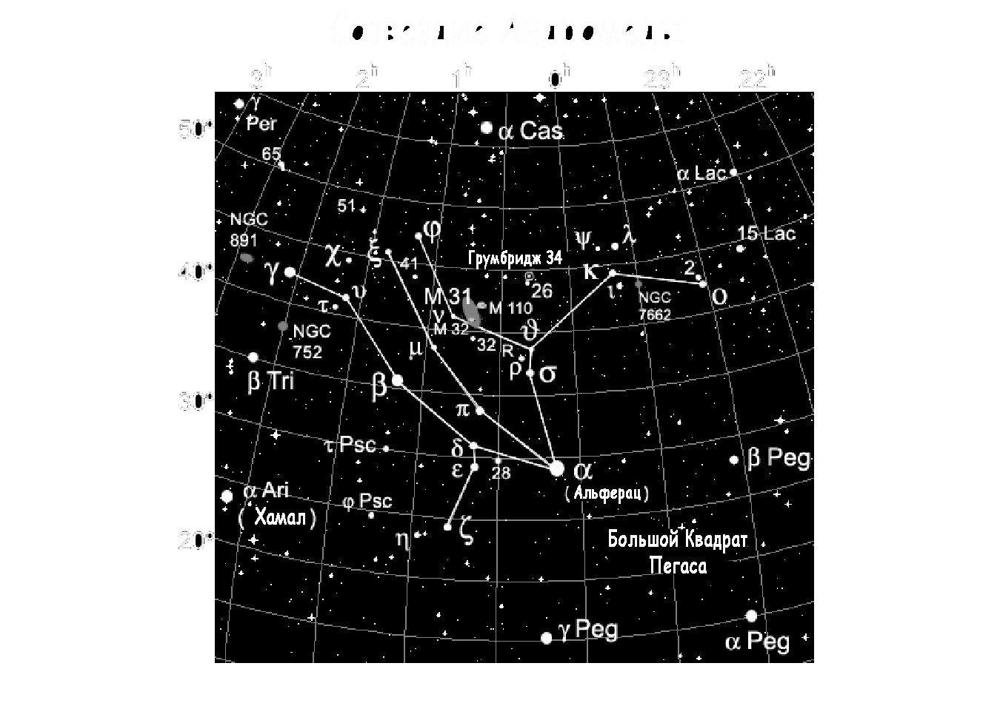

|  |
Поиск на небе созвездия АндромедыОчень хорошо видно созвездие Андромеды по всей территории Украины. Наблюдать за ним можно почти всю ночь, ведь располагается созвездие высоко на небе. Лучше всего наблюдать за ним в октябре и ноябре, но начинать можно и с сентября. Найти само созвездие Андромеды не сложно. Нужно в первую очередь отыскать Большой Квадрат Пегаса. В северо-восточном углу этого квадрата находится звезда под именем Альферац. Именно это светило является началом Андромеды. Созвездие занимает на небе примерно 722 квадратных градусов. |